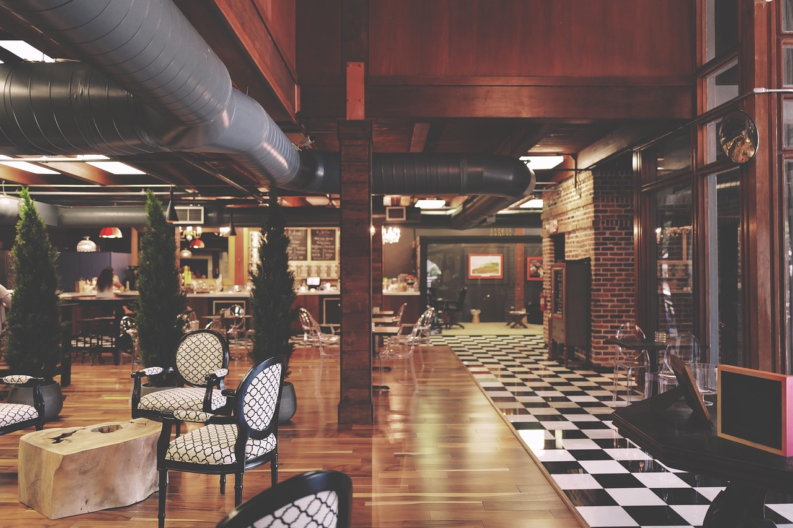
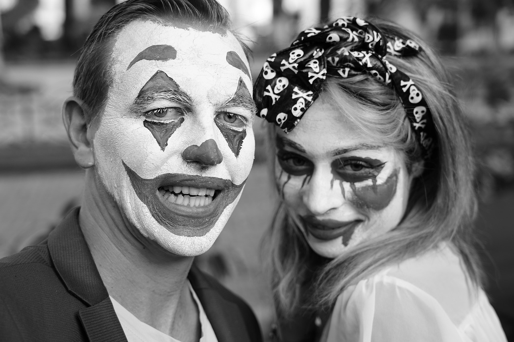

Taverna D'Lua
 Os restaurantes foram criados com o intuito de fazer os clientes imergerem numa experiencia de fantasia, voltada para o sombrio. Enquanto os cleintes comem os pratos pensados exatamente para o ambiente, desfrutam de musica ambiente e funcionários vestidos com costumes de acordo com o tema.
O ambiente conta com pessoas fantasiadas, playground para crianças elém de pista de dança para os clientes. A proposta é ser um lugar animado, mas a cada semana a vibração do lugar pode mudar, se tornando mais um ambiente misterioso. Tudo planejado pela idealizadora e sua equipe.
Recadinho da Idealizadora
"Quando pensei em criar meu próprio restauranete temático, eu só conseguia pensar sobre o quanto o momento da refeição deve ser mágico, por isso unir fantasia e comida pareceu a melhor idéia. E foi, todos os dias meu coração se esquenta vendo os sorriso e a satisfação de vocês,é o que me faz cozinhar com carinho. O melhor tempero da comida é a felicidade de quem vai comer." Por: Maria Eduarda.